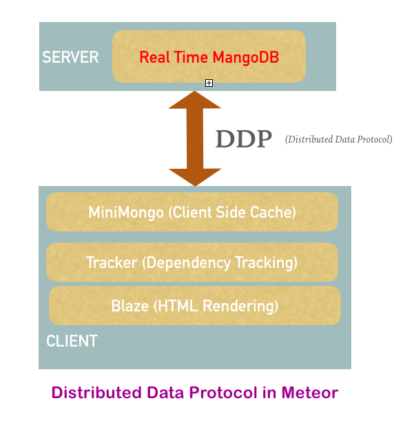
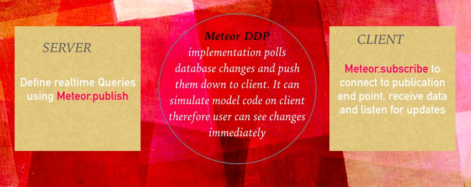

Distributed Data Protocol
Distributed Data Protocol is client server protocol based on WebSockets for queuing and updating a server side database and for synchronizing such updates among clients. Websockets is way to have real time two way communication. It was created by “Meteor Development Group”and introduced in Meteor 0.2.0 for first time. Even though it was developed by Meteor team, nothing in it is meteor specific. There are many clients that use DDP protocol to communicate with Meteor from outside the Meteor Stack
Why DDP?
It is standard way to solve latency issue associated with updates of database in JavaScript implementation : Queuing a server-side database -> Sending the result to client side -> pushing modification to client side. Instead of having a server process everything, render content and then send send HTML across the wire, just data is sent across wire and client decides what to do with it
DDP is independent of kind of system: server, mobile app, web-service or client app (with exception of the browser) sends or receives data. All uses same protocol to communicate therefore all traffic looks same and treated in similar manner.

Key Features
Latency compensation: User doesnot have to wait for a server round trip and see screen changes instantly.
Database driver integtation: ddp automatically wires up replication of remote collection.
Default connection and transparent reconnection: DDP server instance is automatically set up on the server, and each client is configured to automatically open a connection to that server on startup. When DDP client loses its connection and reconnects, subscriptions will restablish and resynchronized.
Security: DDP implements features like authentication, input sanitization and tracker-aware.
Connection hooks: Irrespective of established or closed connection server can still run the code which make it easy to implement features like 'online users'.
Implementation
DDP can work with any database, framework, or programming language. It has JSON based syntax and sends messages similar to REST Protocol. Currently meteor provides both ddp client and ddp server with in same package.
Meteor DDP implementation polls database to pick up changes and push them on the client therefore updating screen immediately without waiting for network. Since DDP uses WebSockets instead of HTTP, the data can be pushed whenever changes occur.

Checkout the DDP Tutorial page for more details.

Client subscribe to set of data, which will be mirrored on client's local datastore.
Server publishes only changes for subscribed data thereby keeping client informed about updates.